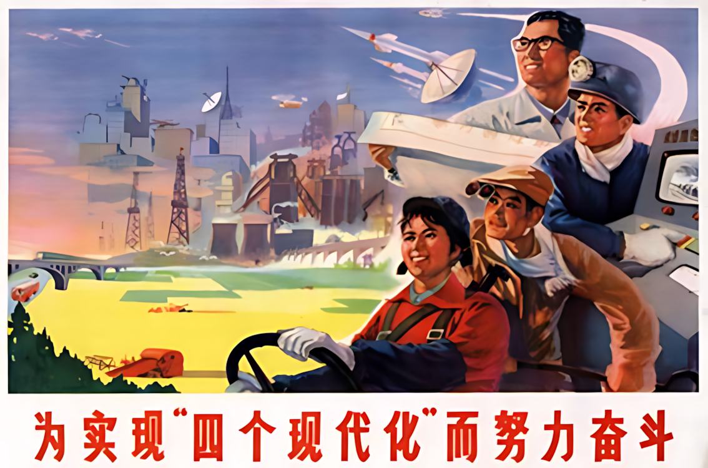

生活中的控制与控制中的生活
In Control and Under Control
作者：卧牛听琴
引言：控制不仅是一门技术，更是一种思维方式
本以为自动化是一门很实用的工程技术，学起来用起来应该兴趣盎然，乐在其中。但读书时，学到的是晦涩高冷的理论，如云山雾罩；做科研时，整日搜肠刮肚，“为赋新词强说愁”；进入工业界，发现空有一脑子的公式，找不到用武之地。
这实在是一个很大的遗憾——至少对我而言是如此。
作为一名科班出身、在控制领域摸爬滚打了四十年的“老兵”，我想聊聊从学术界到工业界、从“屠龙”到“驯马”的一些经历和感悟。尽量用通俗的语言，力求不用一个数学公式，不谈枯燥的定理推导，从思维方法和分析手段的角度，用日常生活中的例子，向更多对控制感兴趣的朋友介绍什么是自动控制。
当年报考大学，我选的就是自动化专业。吸引我的，是“自动化”这个响亮的名字。那时全中国都在畅谈“四个现代化”“四个现代化” 简称“四化”，是中国在20世纪中叶提出的国家建设战略目标，指农业现代化、工业现代化、国防现代化和科学技术现代化。，又赶上电影《未来世界》电影《未来世界》（Future World）是中国改革开放后引进的第一部美国科幻片。片中有机器人生产工厂批量生产“人类”、企图以此控制世界的情节。上映。现代工厂、工业机器人，这一切都让我充满遐想和向往。我便一路读了下去，控制专业的学士、硕士、博士、博士后，在学历上算是走到了头。
Figure 1: 四个现代化

但回首四望，想象中的自动化不仅仍在“云深不知处”，反而越来越模糊。我隐约感到，自己闯入了并非初衷的应用数学的地盘。
控制理论越来越像数学和统计学的一个分支，体系越来越完整和庞大，理论越来越高深和漂亮。这固然有很高的学术价值和欣赏价值；但另一方面，控制理论离实际应用也越来越远，学术界和工业界至越来越缺少共同语言。
如果专注学术，一生留在象牙塔里攀登科学高峰，那自当别论；但我的志向是进入工业界、学以致用。若继续留在空中楼阁里去钻学术界的牛角尖，我越来越感觉脚底无根、心中无底。
于是我开始反复思考三个问题：“我想做什么，我能做什么，我该做什么？”其实，每个人在每个重大决策时，都应该想明白这三个问题：是不是符合我的兴趣？我有没有这个能力去做？做了对我有什么好处？
最终确认自己的兴趣仍在工程应用。于是决定调整方向，转入了工业界。
走进中央控制室，望着成排的控制器终端记得是霍尼韦尔（Honeywell）的TDC2000系统。该系统是全球第一个商品化的集散控制系统（DCS），在自动化领域具有划时代的意义。和满墙的仪表指示灯，我突然有了“蓦然回首，那人却在灯火阑珊处”的感觉。但同时也发现，虽然近在“灯火阑珊处”，中间却隔着一道鸿沟——学术研究与工业应用之间的巨大鸿沟。这鸿沟就像屠龙与驯马的区别学校让你操练的是飞龙（倒立摆、蓄水池），而工业现场的对象更像野马（反应器、精馏塔）；学校教的是屠龙术（状态方程、卡尔曼滤波），工业更需要驯马技（PID、MPC）；学校配备的是缚龙绳（Matlab、Simulink），工业却用套马杆（DCS、Excel）。。学了多年的屠龙术，结果茫然四顾：没有飞龙可屠，满眼全是陌生的野马典出《庄子·列御寇》：“朱泙漫学屠龙于支离益，单千金之家。三年技成，而无所用其巧。”。需要动手时，却发现连DCS上最基本的PID控制器，也与书本里讲的大大不同，无从下手。那种尴尬和落差，实难言表。
于是紧急调整心态，从头开始。收起屠龙术、恶补驯马技。
几十年下来，从研究到开发，从实操到管理，从传统调节到先进控制；从初创小企业到跨国大公司，接触了控制领域几乎所有的职业，经历了多个超大型项目从立项到落地到运营的完整周期，引领过最前沿过程控制技术的整合，足迹遍布世界几十个国家，应用跨越多个行业，在一线开发、设计、操作、调试、改进和管理的过程中摸爬滚打。吃过苦、摔过跤，慢慢走上了正轨，工作起来也变得得心应手。
这种“屠龙”与“驯马”的错位，也让我开始思考：控制这门学问，到底该怎么教、怎么学、怎么用？对于志向是工程应用的学生，从校门到厂门如何能有一个平稳过渡？
根据个人的历程，感觉这个过渡依赖学术界和工业界的相向而行：一是工业界要有更多乐于扶持后辈的前辈，甘当领路人；二是学校要敢于改革，把科研与教学的内容拉下云端，接接地气。
在学校里我们学习了太多的 WHAT 和 HOW，但在 WHY 和 WHAT IF上面的知识却远远不够，结果就是：学习时不知为什么要学，工作中遇到问题不知如何入手。我经常感叹，当时如果能有一些沟通理论和实践的参考书，那可以少走多少弯路！
控制界有无数学富五车、著作等身的学术大咖，也有众多身怀绝技的工程大拿。但前者热衷于“高屋建瓴”，脱离工程实践；后者埋头苦干，鲜有时间著书立说。所以，真正着眼应用的参考书少之又少。
我正好处在中间状态。在学术界待过，对前沿理论略窥一二；后来在工业界摸爬滚打，积累了一些实战心得。难得的是，我对控制这门技术的热爱不减当年，利用退休后的闲暇时光，与学术大咖合作，加上众多工业界同事同行的支持，将过往心得和经验整理总结，出版了两本过程控制的专著S. Niu, D. Xiao, Process Control - Engineering Analyses and Best Practices, Springer, 2022., S. Niu, Process Control for Pumps and Compressors, Springer,2024.。不讲高深理论，不堆数学推导，只是把实际工作中觉得管用和好用的知识和解决问题的思路梳理整合，希望对初入行的同行有所助益。
原计划，这两本书是我对“过程控制”的“为了忘却的纪念”。谁知写完之后，人却仍旧放不下那份与“控制”相伴一生的情感或许，这才是真正的热爱，或说是职业病吧。。
几十年的实践让我越来越意识到，控制不仅仅是一门工程技术，更是一种思维方式和解题思路。这项思维方式和解题思路可以追溯到几百万年前，已经成为我们思维和行为T的本能，适用于更多领域。最深刻的控制逻辑往往不在复杂的公式里，而在我们的生活细节与工业直觉中。有意识地用“控制”的方法思考问题，往往能帮助我们抓住关键、理清主线，达到事半功倍的效果。
于是，我决定再写点东西。这一次，由于不受出版社繁文缛节的局限，可以天马行空，专注于内容，所以会偏重于感想与反思。全书不用数学公式，不讲技术细节，只是从思维方法和分析手段的角度，谈谈生活中的控制。希望能帮助更多人抛开纷乱的公式定理，深入理解控制的本质。
说到底，这是退休后众多爱好中的一个，根子上还是对控制这门技术持久的热爱。若能给您带来一点启发，便是最开心的事。若是觉着班门弄斧，也请一笑置之。
真诚期待您的反馈 (niucontrol@gmail.com)。